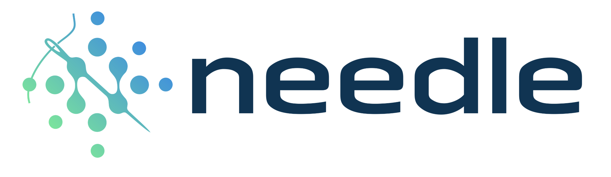

My Projects
USB

In the USB project, I designed and simulated a simplified Serial Interface Engine (SIE) to interact with a thumb drive model, using SystemVerilog and Synopsys VCS. The host performs READ and WRITE operations by coordinating multiple hardware FSMs: a Read/Write FSM for initiating transactions, a Protocol Handler FSM for managing packet-level operations (IN, OUT, DATA0, ACK, NAK) including retries, timeouts, and error handling, and serial encoding FSMs for bit stuffing, NRZI encoding, and CRC checking. The project involves layering FSMs to build a robust transaction protocol that handles errors and corrupted data while adhering to simplified USB communication rules. The testbench simulates an operating system, using predefined tasks (readData and writeData) to initiate memory transfers and validate results. You must design inter-FSM protocols, tri-state drivers for D+ and D- lines, and implement layered Mealy machines for bitwise data transmission and error recovery.
Needle Deep Learning Library
The Needle framework is a custom deep learning library built from scratch, featuring a flexible NDArray backend that supports efficient computations on both CPU and GPU. It includes an automatic differentiation engine for gradient-based optimization, enabling forward and backward passes on tensors. Needle provides essential neural network modules, such as linear layers, convolutions, RNNs, and LSTMs, for tasks like image classification (CIFAR-10) and language modeling (Penn Treebank). With its scalable training infrastructure, including data pipelines, optimizers, and data augmentation tools, Needle serves as a lightweight yet powerful framework for modern deep learning
Network On Chip

In this Network-on-Chip (NOC) project, I designed a simple communication system with two interconnected routers and six nodes. Nodes serve as endpoints for sending and receiving 32-bit data packets, while routers handle packet routing using 8-bit transfers per clock cycle. The project is divided into two parts: designing a Node module that interfaces with testbenches and routers, including buffering packets via a FIFO queue, and implementing a Router module that routes packets efficiently and fairly across its four ports while handling concurrent data transfers. Routers must reassemble and transfer packets between nodes or other routers while adhering to handshaking protocols, prioritizing fairness (e.g., round-robin scheduling) and avoiding packet loss. The design emphasizes correctness, speed, and fairness to ensure all packets reach their correct destinations without overflow or bottlenecks.
RISC-240 CPU
Working with a partner, we made a mini-RISC-V CPU using SystemVerilog. We support 15 ALU instructions, 8 registers in a register file, and memory read/write. To increase the efficiency of integer multiplication, we made a multiplication co-processor and re-wrote the assembly file to manage memory more efficently. After adding the co-processor, we ran our CPU on an FPGA with the help of Quartus to examine the result. We decreased the average number of clock cycles requried from 500 to 75.
Digital Board
Realizing the need to improve the bulletin boards across campus, we create a digiralized version of the bulletin board using Flutter. Students can login to the main page via Google OAuth. All the posters are organized into different categories, and expired posters will be removed by our system. Students can like the poster, make comments on posters, and post new content. To post a new poster, student must specify upto 3 categories of the poster, and select an expiration date. All of the business logic are handled by Firebase (authenticating users, keeping tracks of all the posters liked by a user/posted by a user, and posting new content/removing old content). Additionally, we also have an admin-only page, where the admins can check the posters, and only appropriate posters will be displayed on the main page.
Wordle
This is a software-hardware co-design project. We used HTML and CSS to create the website of Wordle game, and used JS to handle the game logic. Next, we used SystemVerilog to add more complicated datapath and FSM: inserting coins to buy the game, counting the number of games purchased, and computing the game logic and the game result. In the end, we synthesized the game on the FPGA, and designed the VGA interface to display the result on the screen.
Social Network
This is a web application made of HTML and CSS. Users are able to post content, follow/unfollow other users, edit profile, and making comments. I used Django REST API to handle business logics such as user authentication, profile editing, making posts/comments. Additionally, I used MySQL to store user models, post models, and comment models. In the end, I deployed it to AWS EC2 with Apache server.
Website: http://54.91.209.214/accounts/login/?next=/CMUD

Unlike a traditional MUD with a single application server, CMUD uses the globally distributed architecture shown in Figure 1. Players run the CMUD client app on their own machine, which connects to a nearby (low ping) backend storage server. The CMUD client is stateless, converting the player's inputs into queries against the backend storage server and printing out the results. Different backend storage servers “sync” with each other (i.e., exchange data in the background) to maintain a single consistent global state, so that all users see the same virtual world, including each others' actions. The backend storage system itself implements a simple key-value store for string keys and values. Specifically, it supports operations to Get and Put key value pairs, plus an operation to List all key-value pairs starting with a given prefix. The advantage of this architecture is that it simplifies app development and deployment: a cloud provider can run the same generic backend storage system for many apps, while individual app developers only need to code and deploy their app's client, not their own servers. This project is implemented using Go along with its RPCs and the MailBox system as the message queue.
Raft
Raft is a consensus algorithm for managing a replicated log. It produces a result equivalent to (multi-)Paxos, and it is as efficient as Paxos, but its structure is different from Paxos; this makes Raft more understandable than Paxos and also provides a better foundation for building practical systems. In order to enhance understandability, Raft separates the key elements of consensus, such as leader election, log replication, and safety, and it enforces a stronger degree of coherency to reduce the number of states that must be considered. Results from a user study demonstrate that Raft is easier for students to learn than Paxos. Raft also includes a new mechanism for changing the cluster membership, which uses overlapping majorities to guarantee safety. I replicated the system described in this paper using Go.
Demo and Paper: https://raft.github.ioDistributed Bitcoin Miner
This project is implemented using Go and has 2 parts: LSP Protocol and distributed bitcoin miner based on it. LSP is a networking protocol supporting client/server model with message acknoledging, checksum integrity checking, and reliability under bad network conditions. Based on such protocol, working as a team, we implemented the mining infruscture supporting brute force reverse hashing with a task scheduler. With such implementation, we are able to reduce a mining task requiring 28hrs to only 17min.
Proxy Server
This project is implemented using C with a multi-threaded model. A proxy server is a computer program that acts as an intermediary between clients making requests to access resources and the servers that satisfy those requests by serving content. A web proxy is a special type of proxy server whose clients are typically web browsers and whose servers are web servers providing web content. When a web browser uses a proxy, it contacts the proxy instead of communicating directly with the web server; the proxy forwards the client’s request to the web server, reads the server’s response, then forwards the response to the client.
Dynamic Memory Allocator
I wrote dynamic memory allocator in C which consists of the malloc, free, realloc, and calloc functions. My version of optimization outperforms the original version by increasing 50% performance and 90% utilization.